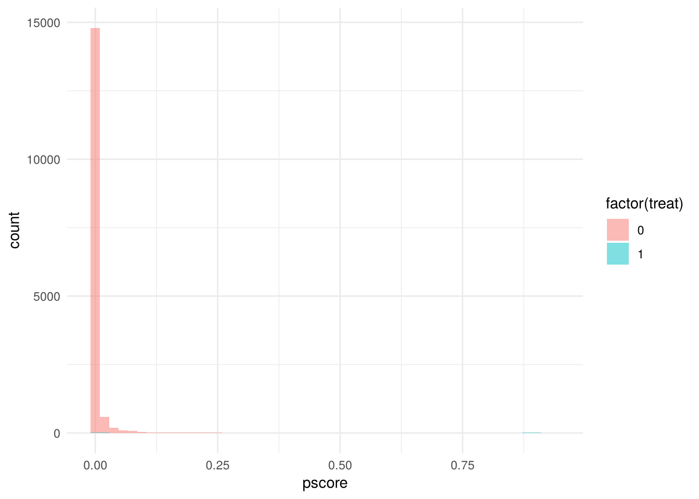

Participants should be able to state the conditional independence assumption (CIA) and the common-support condition, compute a subclassification estimate by hand, explain why the propensity score is a sufficient statistic for the covariates, implement inverse-probability weighting (IPW) and nearest-neighbor matching on the propensity score, and recognize the Dehejia–Wahba result on the National Supported Work (NSW) experiment and Current Population Survey (CPS) comparison group: a good selection-on-observables design can recover an experimental benchmark — and a careless one can be off by $10,000.
Time
Block
0:00
Recap: simple difference in outcomes = average treatment effect (ATE) + selection bias + heterogeneous-effect bias
0:05
Concepts: CIA, common support, curse of dimensionality, the propensity-score theorem
0:20
Walkthrough: Titanic subclassification; NSW experiment vs CPS survey controls; estimate the propensity score; IPW and nearest-neighbor ATT
Conditional independence assumption (CIA).\((Y^0, Y^1) \perp D \mid X\). Within strata of \(X\), treatment is as good as random. This is the backdoor criterion in potential-outcomes clothing; it is also called selection on observables. It is an assumption about unobservables, so no test on the data can confirm it; only the DAG argument can.
In plain English
The bet behind matching: “once I line up people with the same age, education, and past earnings, the ones who got the program and the ones who didn’t are interchangeable.” If something you can’t see — motivation, say — also drove who signed up, the bet is lost, and no amount of data will tell you so.
Common support.\(0 < P(D=1 \mid X) < 1\). For each covariate profile there must be both treated and untreated units; otherwise you are extrapolating.
In plain English
You can only compare like with like if both kinds exist. If every 50-year-old in the data got the program, you have nobody to compare them to, and any “effect” for 50-year-olds is a guess. Check the overlap before you do anything else.
Subclassification. Stratify on \(X\), compute the treated-minus-control difference within each stratum, and average using the treated group’s stratum shares (for the average treatment effect on the treated, ATT). It works beautifully with a few discrete covariates and dies of the curse of dimensionality quickly.
In plain English
Sort people into bins — men/women, adult/child — compare treated to untreated inside each bin, then average the bin-by-bin gaps, counting each bin as heavily as it appears in the treated group. Simple and transparent, but with ten characteristics you have thousands of bins and most are empty.
Propensity score. Rosenbaum and Rubin: if CIA holds given \(X\), it also holds given \(p(X) = P(D=1 \mid X)\). One scalar replaces the whole covariate vector. Estimate it with a logit, then stratify on it, weight by it (inverse probability weighting, IPW), or match on it (nearest neighbor, NN).
In plain English
Instead of matching on ten characteristics at once, boil them down to one number: how likely was this person to get the treatment, given everything we know about them? Two people with the same likelihood are a fair comparison even if they got there by different routes. IPW uses that number as a weight; matching uses it to find each treated person’s closest untreated twin.
Dehejia–Wahba. LaLonde showed that regressions using a non-experimental control group (the Current Population Survey, CPS) badly missed the National Supported Work (NSW) experimental estimate. Dehejia and Wahba showed that propensity-score methods with a well-specified score and attention to common support get close. The lesson is double-edged: matching can work, and it can fail silently.
In plain English
A famous test case: a real experiment said job training raised earnings by about $1,800. Replacing the experiment’s control group with ordinary survey respondents gave minus $8,500. Careful propensity-score work got back to roughly $2,000. The method can rescue a bad comparison group — but only when you have the right variables, and nothing warns you when you don’t.
Walkthrough
Step 1 — Titanic: the simple difference and the subclassified difference
Did first-class passengers survive more because they were first class, or because of who was in first class? Stratify on sex and age.
# A tibble: 4 x 5
man adult diff n_treated w
<int> <int> <dbl> <int> <dbl>
1 0 0 0.386 1 0.00308
2 0 1 0.346 144 0.443
3 1 0 0.593 5 0.0154
4 1 1 0.137 175 0.538
sum(att$diff * att$w)
[1] 0.2375421
SDO ≈ 0.354: first-class passengers survived 35 points more often. Within sex×age strata the gaps are smaller (adult men: 0.33 vs 0.19; adult women: 0.97 vs 0.63), and the subclassified ATT is ≈ 0.24. A third of the raw gap was who was in first class, not being in first class.
Step 2 — NSW: the experimental benchmark and the naive comparison
nsw_mixtape.dta is the randomized job-training experiment; cps_mixtape.dta is a non-experimental comparison group from the CPS.
Experimental effect ≈ +$1,794. NSW treated vs CPS controls ≈ −$8,498. The CPS sample is older, better educated and far richer than NSW enrollees; selection bias swamps the effect.
Step 3 — Estimate the propensity score
The Dehejia–Wahba specification: polynomials in age and education, indicators for zero earnings, and an education×earnings interaction.
mean min max
treat
0 0.008 0.000 0.657
1 0.328 0.001 0.651
d <- d %>%mutate(age2 = age^2, age3 = age^3, educ2 = educ^2,u74 =as.integer(re74 ==0), u75 =as.integer(re75 ==0),interaction1 = educ * re74)logit <-glm(treat ~ age + age2 + age3 + educ + educ2 + marr + nodegree + black + hisp + re74 + re75 + u74 + u75 + interaction1,family =binomial(), data = d)d$pscore <-predict(logit, type ="response")d %>%group_by(treat) %>%summarise(mean =mean(pscore), min =min(pscore), max =max(pscore))
# A tibble: 2 x 4
treat mean min max
<dbl> <dbl> <dbl> <dbl>
1 0 0.00665 0.00000000118 0.924
2 1 0.425 0.00106 0.938
ggplot(d, aes(pscore, fill =factor(treat))) +geom_histogram(bins =50, position ="identity", alpha =0.5) +theme_minimal()

Mean score ≈ 0.33 for treated and 0.008 for controls. Most CPS people have essentially zero probability of being in NSW. That is the common-support problem in one histogram; the next step trims to the overlap region.
Step 4 — Inverse-probability weighting on the overlap region
About 445 units remain in the overlap region, 147 of them treated. Normalized IPW ≈ +$2,030; non-normalized ≈ +$2,860. Both are within shouting distance of the $1,794 experimental benchmark and nowhere near −$8,498. Normalized weights are more stable; always report them.
Step 5 — Nearest-neighbor matching on the score (ATT)
Means Treated Means Control
distance 4.253567e-01 4.255886e-01
age 2.581622e+01 2.565946e+01
age2 7.173946e+02 7.018649e+02
age3 2.155466e+04 2.043646e+04
educ 1.034595e+01 1.080000e+01
educ2 1.110595e+02 1.203351e+02
marr 1.891892e-01 1.837838e-01
nodegree 7.081081e-01 5.945946e-01
black 8.432432e-01 8.756757e-01
hisp 5.945946e-02 2.702703e-02
re74 2.095574e+03 1.838650e+03
re75 1.532055e+03 1.474858e+03
u74 7.081081e-01 7.675676e-01
u75 6.000000e-01 6.000000e-01
interaction1 2.289873e+04 1.991657e+04
1-NN ATT ≈ +$1,760, almost exactly the experimental estimate. (MatchIt with replacement gives a similar number; its summary() also shows covariate balance before and after, which is the diagnostic you should always print.)
Exercises
Bias reduction by matching. Using training_bias_reduction.dta (8 units, book §5.3), compute the raw SDO, then match each treated unit to the control with the closest X, and compute the ATT. Then compute the bias-corrected matching estimate using a regression of \(Y\) on \(X\) in the control group. Compare all three to each other.
Trimming sensitivity. Rerun Step 4 with overlap windows (0.05, 0.95), (0.1, 0.9) and (0.2, 0.8). How does the estimate and the sample size move? Write two sentences on the bias–variance trade-off involved.
Break CIA. Drop re74 and re75 from the propensity-score model and redo Steps 3–5. What happens, and what does it tell you about which covariates drive selection into NSW?
Solutions
Solutions (click to expand)
1. Raw SDO = 3.25. Matching each treated unit to the control with the closest X (11→10, 7→8, 5→4, 3→4) gives an ATT of 2.25. The bias-corrected version adjusts each matched pair by \(\hat{\mu}_0(X_{treated}) - \hat{\mu}_0(X_{match})\), where \(\hat{\mu}_0\) is the control-group regression of \(Y\) on \(X\). In this tiny example the \(X\) mismatches are +1, −1, +1, −1, so with a linear \(\hat{\mu}_0\) the corrections cancel and the bias-corrected ATT is also 2.25 — which is itself a useful lesson: the correction matters when mismatches are systematic, not when they are balanced.
2. (0.05, 0.95): ≈ +$1,320 on 601 units; (0.1, 0.9): ≈ +$2,030 on 445; (0.2, 0.8): ≈ +$3,210 on 256. Wider windows keep more controls (lower variance) but include units with poor overlap (more bias); narrower windows do the reverse. The estimate swings by almost $2,000 across reasonable choices — report the sensitivity, not one number.
3. Without lagged earnings the treated group’s mean score drops from 0.33 to about 0.20, and the (0.1, 0.9) IPW estimate flips to ≈ −$2,080. The score no longer captures the dimension that matters most (NSW enrollees had near-zero 1974–75 earnings). Pre-treatment outcomes are the single most important covariate in this design.
Facilitator notes
Facilitator notes (click to expand)
The Titanic step is the whole chapter in miniature. Make sure everyone can reproduce the 0.24 by hand (four cells, four weights) before touching propensity scores. The weights are the treated group’s shares, which is what makes it the ATT.
Misconception: the propensity score is a prediction model. You are not trying to predict treatment well; you are trying to achieve covariate balance. A score with AUC 0.99 means no overlap. Say this out loud; it surprises people who come from ML.
Misconception: matching “controls for” unobservables. It does not. The only thing that justifies CIA is the DAG from Session 2.
On the categorical columns.pd.read_stata() returns Stata value labels as categoricals, which is why Step 1 compares to strings. In R, haven keeps the numeric codes with labels attached; attributes(t$class)$labels shows them.
If running short. Drop Step 5; IPW alone makes the point.
Discussion prompts. (a) Why does Dehejia–Wahba work for NSW but Session 2’s discrimination example cannot be fixed by matching? (b) What covariate would you most want that is not in the CPS?
Bridge to next session. Matching needs CIA. RDD gives up on observing everything and instead finds a place where treatment flips for reasons that are locally as good as random.